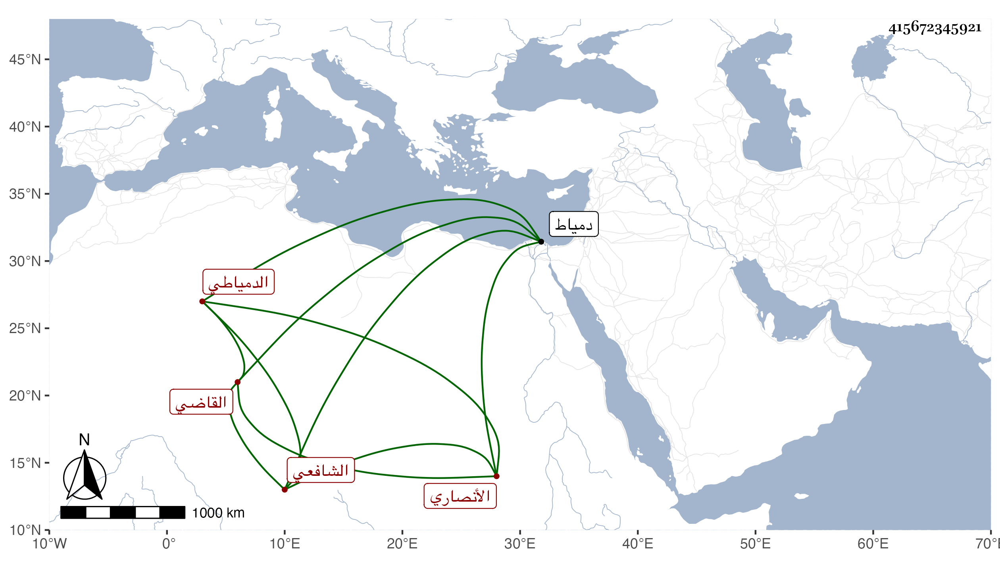

0902Sakhawi.DawLamic.ITO20230111-ara1.EIS1600.415672345921
Biography ID: 415672345921
802
علي بن عبد الرحمن بن علي بن عبد الرحمن بن عمر بن عبد الوهاب القاضي نور الدين أبو الحسن الأنصاري الدمياطي الشافعي أخو التقي محمد لأبيه ويعرف كأبيه بابن وكيل السلطان . ولد في المحرم سنة ثمانمائة وحفظ المنهاج وتفقه بناصر الدين البارزي ، وحج وولي قضاء دمياط بعد أبيه . ومات في سابع عشر ذي القعدة سنة ثلاث وأربعين .
